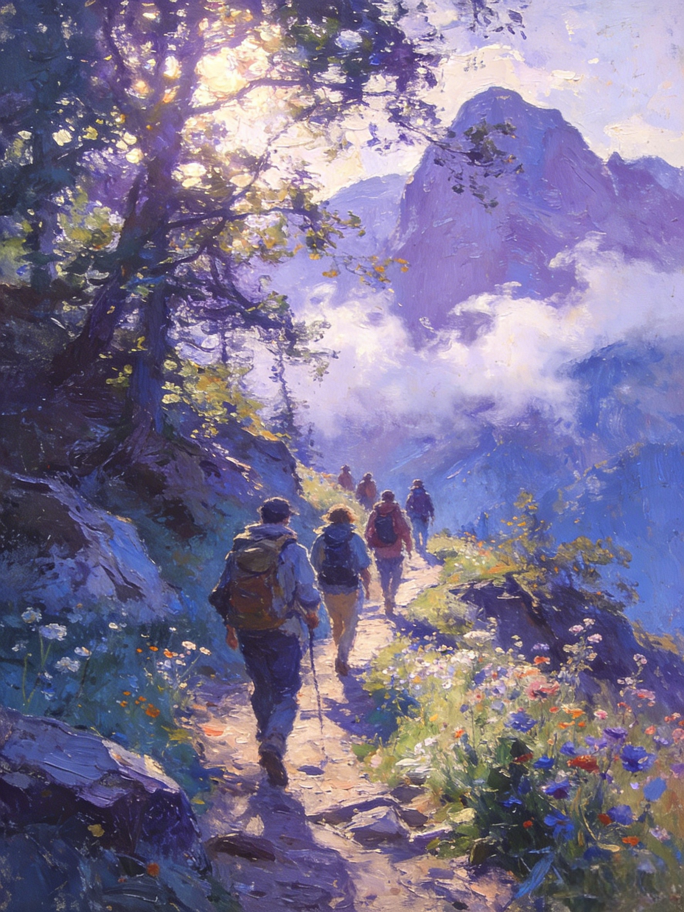

了解北京徒个乐网站的使命和数据来源
北京徒个乐，深耕京城全域山野、近郊山脉、城郊秘境全域赛道，是本土垂直深耕、真实实测、全场景适配的专属户外徒步干货资讯一站式核心平台。立足北京全域地理路况、适配同城出行节奏、贴合四季山野气候特征，深耕门头沟、怀柔、密云、平谷、延庆、房山六大核心徒步片区，全覆盖休闲轻徒步、亲子环山步道、进阶穿越野路、小众秘境登高、原生态山野环线全梯度出行需求，全程聚焦北京城区、近郊山野、周边小众原生态徒步点位实景溯源，只为给同城徒步爱好者、户外出行新手、周末轻出游人群、小众山野打卡行者，配齐靠谱、精准、可直接一键落地出行的全套徒步出行参考，轻松敲定每一场随心出发的山野徒步行程。
我们的团队由一群热爱户外徒步的爱好者组成，我们希望通过这个平台，让更多同城朋友走出楼宇街巷、奔赴京郊山野，沉浸式邂逅北京春日漫山花海、夏日密林纳凉、秋日层林漫山、冬日清寂山野的四季原生态绝美风光，沉浸式解锁徒步解压、轻量健身、山野放空、同城微度假的双重治愈乐趣，玩转高质量北京周边户外轻出行。
我们的网站提供了详细的徒步路线信息，包括路线长度、难度、最佳季节、交通信息等，同时还提供了徒步指南，帮助您更好地准备徒步之旅。

我们的徒步路线数据来源于以下渠道：
我们的数据集包含了北京及周边地区的多条徒步路线，每条路线都有详细的信息，包括：
我们会定期更新数据，确保信息的准确性和时效性。
为徒步爱好者提供详细、准确的路线信息，帮助他们规划安全、愉快的徒步之旅。
推广徒步运动，让更多的人了解户外徒步的乐趣，享受大自然的美好。
促进户外环保意识，倡导无痕山林理念，保护自然环境。
成为北京地区最权威、最全面的徒步路线信息平台。
建立一个活跃的徒步爱好者社区，分享经验和故事。
通过徒步活动，促进人与自然的和谐相处。
如果您有任何问题、建议或合作意向，欢迎联系我们：
我们会在24小时内回复您的消息。
本网站提供的徒步路线信息仅供参考，具体情况可能因季节、天气等因素而变化。在进行徒步活动前，请务必：
本网站不对因使用本网站信息而导致的任何损失或伤害承担责任。